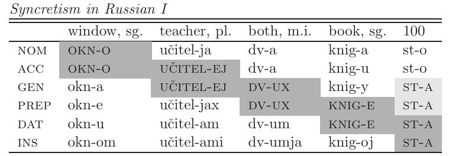

Kasus Theorie
17. Januar 2019
Kasus
- Was sind die interne Strukturen von Merkmale?
- Numerusmerkmale:
- [±Singular], [±Minimal], [±Wenig]
- Personmerkmale:
- [±Sprecher], [±Zuhörer]
- Genus: ¯\_(ツ)_/¯
- Kasus:
- Heute
Kasus
- Warum night [nominativ], [akkusativ] usw.?
- Es gibt morphologischer Beweis, dass es eine enge Beziehung zwischen verschiedene Kasus gibt.
- Es gibt typologischer Beweis, dass es "Meta-Kasus" gibt.
- Es ist nie so einfach...
Vorschlag
- In den letzten Jahren sagen manche WissenschaftlerINen, dass Kasus ist komplex.
- Das bedeutet, dass manche Kasus beinhalten andere Kasus.
- [nom] = [nom]
- [acc] = [nom, acc]
- [dat] = [nom, acc, dat]
- [instr] = [nom, acc, dat, instr]
- usw.
Komplexes Kasus
- Es gibt eine typologische Hierarchie, die sogennante ''Blake Hierarchie''
nom – acc/erg – dat – loc – instr/abl
- Blake (1994): ''wenn eine Spache hat ein Kasus von der Hierarchie, normalerweise hat es auch ein Kasus von alle Plätze links an der Hierarchie.''
- Also:
- Acc → Nom
- Loc → Dat, Acc/Erg, Nom
Kasushierarchie
- Z.B.: Englisch hat nominative und akkusative Pronomen.
| Nom | Akk | Dat | Ins | |
|---|---|---|---|---|
| 1sg | I | me | to me | with me |
| 3sg.m | he | him | to him | with him |
| 3sg.f | she | her | to her | with her |
| 1pl | we | us | to us | with us |
| 3pl | they | them | to them | with them |
- Aber, es gibt keine Pronomen für Dativ, Genitiv usw.
Kasushierarchie
- Deutsch hat Pronomen für Nominativ, Akkusativ, Dativ und Genitiv, aber nicht Instrumental
- Instrumental wird durch 'mit' ausgedrückt.
| nom | akk | gen | dat | instr | |
|---|---|---|---|---|---|
| 2sg | du | dich | deiner | dir | mit dir |
| 3sg.f | sie | sie | ihrer | ihr | mit ihr |
| 1pl | wir | uns | unser | uns | mit uns |
| 2pl | ihr | euch | euer | euch | mit euch |
| 3pl | sie | sie | ihrer | ihnen | mit ihnen |
Kasushierarchie
- Armenisch hat Pronomen für alle Kasus.
| nom | akk | dat | gen | instr | |
|---|---|---|---|---|---|
| 1sg | es | inj | inj | im | injnov |
| 2sg | du | k'ez | k'ez | k'o | k'ezanov |
| 3sg | na | nran | nran | nra | nranov |
| 1pl | menk' | mez | mez | mer | mezanov |
| 2pl | duk' | jez | jez | jer | jezanov |
| 3pl | nrank' | nranc' | nranc' | nranc' | nranc'ov |
Containment: Tschechisch
- Manche Kasus beinhalten andere Kasus.
| 'Mann' | 'Huhn' | 'Auge' | |
|---|---|---|---|
| Nom | muž-i | kuřat-a | oč-i |
| Acc | muž-E | kuřat-A | oč-I |
| Gen | muž-ů | kuřat | oč-í |
| Prep | muž-í-ch | kuřat-e-ch | oč-i-ch |
| Dat | muž-ů-m | kuřat-ů-m | oč-i-m |
| Ins | muž-E-ma | kuřat-A-ma | oč-I-ma |
Containment
- Auch im West Tocharian.
| 'Pferde' | 'Männer | |
|---|---|---|
| nom | yakwi | eṅkwi |
| acc | yakwe-ṃ | eṅkwe-ṃ |
| gen/dat | yäkwe-ṃ-ts | eṅkwe-ṃ-ts |
Synkretismus
- Sykretismus bedeutet, dass zwei Mitglieder von einem Paradigma das gleiche Form haben.
| Maskulinum | Femininum | Neutrum | |
|---|---|---|---|
| nom | der | die | das |
| akk | den | die | das |
| dat | dem | der | dem |
| gen | des | der | des |
Synkretismus: Greichisch
-
- o
- the.nom
-
- maxiti-s
- Kämpfer-nom
'der Kämpfer'
-
- t-on
- the-akk
-
- maxiti
- Kämpfer
'den Kämpfer'
-
- t-u
- the-gen
-
- maxiti
- Kämpfer
'dem Kämpfer'
Synkretismus: Greichisch
-
- o
- the.nom
-
- anthrop-os
- human-nom
'der Mensch'
-
- t-on
- the-acc
-
- anthrop-o
- human-acc
'den Mensch'
-
- t-u
- the-gen
-
- anthrop-u
- human-gen
'dem Mensch'
Synkretismus: Greichisch
nom – acc – gen
- Synkretismus nur in nebeinander Kasus.
| maxit (pl) | maxit (sg) | alpha | nicht-attestiert |
|---|---|---|---|
| maxit-es | maxit-i-s | álpha | A |
| maxit-es | maxit-i | álpha | B |
| maxit-on | maxit-i | álpha | A |
Synkretismus: Russisch
Zwei Möglichkeiten
- Wenn komplexe Kasus beinhalten andere Kasus, das könnte in zwei Arten sein.
- Erst, alle Merkmalen könnte auf das gleiche syntakischer Kopf sein:
Zwei Möglichkeiten
- Es könnte auch sein, dass jedes Merkmal hat sein eigene Projektion im Baum.
Bewies für #2
- Es ist bekannt, dass Sprachen unterschieden sich in der Position von Demonstrativ, Zahlwort und Adjektiv und Substantiv.
Vorschlag
- Die Position von der Substantiv ist wie höch in der Struktur die Substantiv verschobt.
Kasus: Caha (2009)
Kasusbaum
- Caha (2009) schlagt die Folgende vor:
Kasusbaum
Präpositionen
- Wir finden auch das gleiche, nebeinander Synkretismus mit Präpositionen.